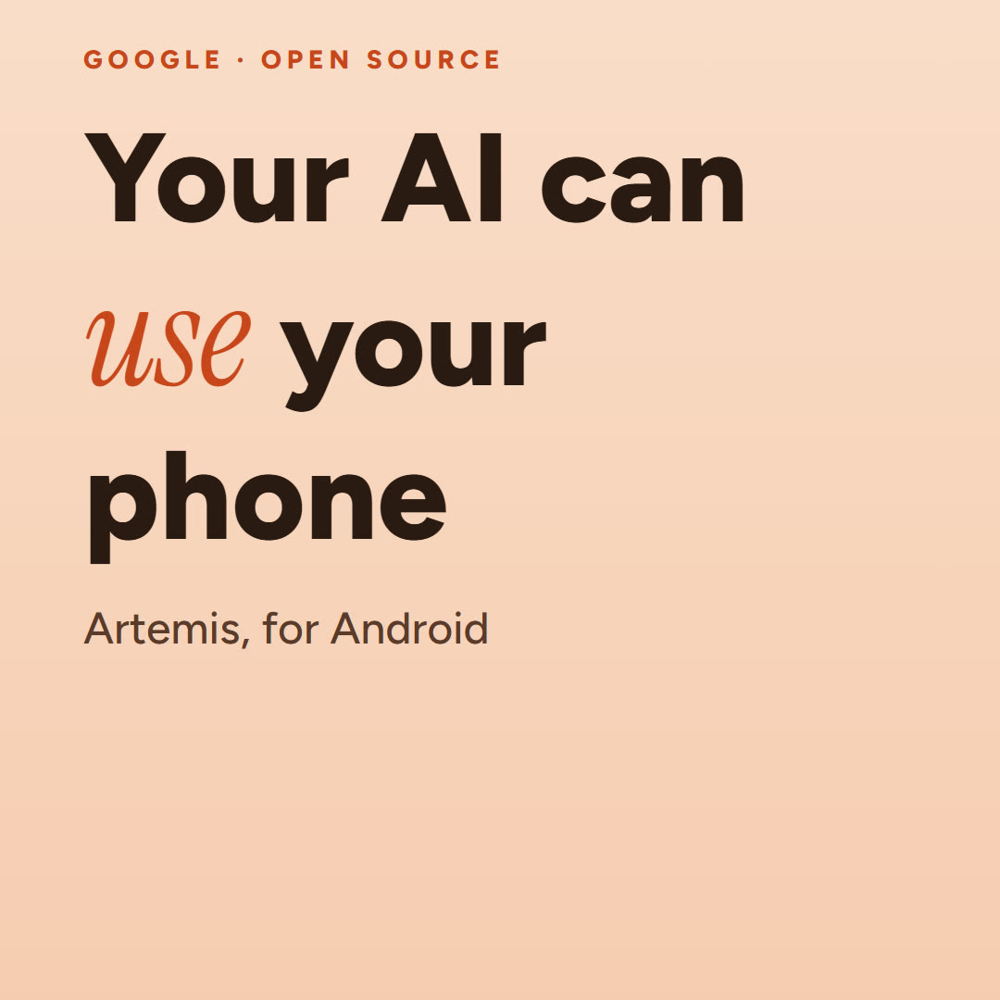

Google Artemis: the setup guide
Control your Android phone with plain English, from a web page, the terminal or your AI coding tool. For anyone with an Android phone (or emulator) and a computer.

Quick start
- Turn on USB debugging on your Android phone and plug it in.
- Run
git clone https://github.com/google/artemis.git, thencd artemisand./start.sh(Windows:.\start.bat). - Add one AI model key to
.env, then runuv run artemis uiand open http://localhost:8000.
What it is
Artemis is Google's open-source tool (Apache 2.0) that turns instructions like "Open Settings, find Battery and tell me the level" into actions on a real Android device. You can drive it from a web console, the command line, an MCP server for AI IDEs, or a Python SDK.
Before you start
- A computer: macOS, Linux or Windows. iOS phones are not supported yet (it is on the roadmap).
- Python 3.12 or newer.
- An Android phone with USB debugging on, or an Android emulator.
- One AI model key: Gemini, Google, OpenAI, Anthropic, OpenRouter or xAI. Each provider bills its own model use, so check their pricing.
- You don't need to install ADB, scrcpy, FFmpeg or uv first: the start script adds them if they are missing.
Step 1: Turn on USB debugging
- On the phone, open Settings → About phone and tap Build number seven times to unlock developer options.
- Open Developer options and turn on USB debugging.
- Plug the phone into the computer and tap Allow when it asks to trust this computer.
Step 2: Get Artemis
- Clone it:
git clone https://github.com/google/artemis.git - Go into the folder:
cd artemis - Start it:
- macOS or Linux:
./start.sh - Windows PowerShell:
.\start.bat(in CMD:start.bat)
- macOS or Linux:
Step 3: Add your model key
- Run
uv run artemis initfor the first-time setup, or copy.env.exampleto.env. - Put one key in
.env, for exampleGEMINI_API_KEY=followed by your key. Keep this file private.
Step 4: Run your first task
- In the terminal:
uv run artemis run "Open Settings, find Battery and tell me current level" --profile flash - Or in the browser:
uv run artemis ui, then open http://localhost:8000
The first task installs a small Accessibility Helper app on the phone. It lets Artemis read the screen, and it listens only on the phone itself.
Pick a speed
- flash (the default): a fast loop, about 3 to 5 seconds a step. Good for simple tasks.
- pro: plans, acts, then checks its own work, about 15 to 40 seconds a step. Better for long, multi-app jobs.
Set the default with ARTEMIS_DEFAULT_PROFILE in .env.
Use it from your AI coding tool (optional)
- Run
uv run artemis mcp --install allto add it to every supported tool, oruv run artemis mcp --generate-config <client>for one. - Supported: Antigravity, Codex, Cursor, Claude Code and Claude Desktop, Windsurf, VS Code, Cline and Roo Code, OpenClaw.
- Your tool then gets five actions: run a task, manage a running task, read the screen, inspect what it did, and diagnose problems.
Try these
Copy one into the web console or after uv run artemis run. Keep one small goal per task, and start on a test phone.
Open Settings, find Battery and tell me current levelOpen Settings, find Battery and report the level. Take a screenshot. Do not change any settings.Open [your app] and describe the main navigation. Take a screenshot of each main tab. Do not submit forms.Try these steps in [your app]: [steps]. Report what happened, with screenshots and Logcat.
Gotchas
- Using your personal phone? Set
ARTEMIS_HELPER_AUTO_INSTALL=false(then install the helper only when you choose, withuv run artemis helper install) andARTEMIS_KEEP_DEVICE_AWAKE=falseso the screen still times out. - Something not working? Run
uv run artemis doctorfirst.uv run artemis status,stopandrestartmanage the background server. - Remove the helper any time with
uv run artemis helper uninstall. - It drives a real phone: start on a test device or emulator before you let it near your banking or chat apps.
Links
Save it
- artemis-setup-guide.pdf 319 KB